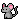

bugg's blog !

not seeing something? check the blog entry archive linked in the sidebar!
6/2/26 10:55 AM

hello little babbies! im feeling much better lately. while i was gone, i was working on a project! the logic is MOSTLY done, with some minor node counting issues, but if u wanna check out my fish classification joke, out /fish on the homepage's address. its nowhere near done, it has zero styling, but its a sneak peak for my more dedicated lurkers. summer updates might get sparse again, but i promise i wont neglect you guys all summer and if i have time i ,might make an art gallery to post here to feed u guys more content. sorry its boring rn, ive been focused on sorting out a gift for my gf's birthday, riley if you're reading this DONT TELL HER and also finals are frying me and im only writing when i can, which isnt often! but know i love and cherish you all dearly. and happy pride my beloveds. mwahhhhhhh ! also i got a massive bag of peanut mnms and im munching. so jolly. i love being a greasy american chud.
6/4/26 12:20 PM
its been a mostly good day! ive gotten mostly all my schoolwork done for the year so im a tad bit bored, but ive got the fish project and other html and css stuff to work on, as well as the ever expanding task of the animal database. what a pain but at least it keeps me busy, right?on another note, the year's almost over. im dreading my friends graduating. i think itll only get worse every year. im gonna go tree climbing with my friend this weekend which is fun, but we're running out of time. im hanging out with some friends and my gf at the pool today which is nice, but they'll be working on hw while we're there and i dont like swimming so idk what i'll do. i ought to start packing for the summer. i'm putting it of as long as i can but im running out of time. i feel like that's kind of a motif in my life rn, im always running out of time for something, and as soon as one deadline hits, another starts rushing toward me. i love my friends and i love my gf and i'm going to hate missing them all. not the best experience ): it'll pass and i'll see most of them again next year, i suppose. i feel like all the friends i wanna see the most are the ones leaving forever, though. this mini blog entry has gotten much too long, so i'll shut up.
6/8/26 2:35 PM
i survived the neocities outage of 6/5/25!!!!
i thought my school had banned neocities and i cried so hard....
hi hi hi little babbies! it is a good day! i was able to give my gf her birthday present (: and!! and!! and!! i got 99/100 on a final i didnt study for at all! i havent studied for a single final but ive been getting 90s on all of them so clearly im gods favorite (angela if you're reading this im joking; im not being insensitive.) so im pretty happy! i also bought some snacks this weekend that i got to eat today while working on my fish project. i couldnt wish for a better day!!! chudmaxxing, coding, and eating the yummy snacks and drinking the yummy drinks. i am so jolly!! my weekend wasnt bad at all either. i worked thursday and saturday, so i should make maybe 70 bucks after tax? and im not a big spender so that should be enough for fun money for vacation. yay! and also!!! major update!! i bought my first binder! its being shipped today so itll likely be here by the end of the week. i will provide a review including brand name and price, alongside my reccomendation and thoughts. IM SO HYPE IM GONNA BE SO BOY!!!!!!!!!!!! WAOOOOWWWWW!6/10/26 10:13 AM
hello! i feel compelled to write about my favorite pokemon. my all time favorite has got to be hariyama. i can't really explain why. it was my partner in scarlet and i just grew attached to it over the 100+ hours i spent playing the game. mine is named big bonk and i love him sm. im absolutely heartbroken i cant transfer him to legends ZA. my next favorite is gothitelle. ive been hunting her shiny FOREVERRRRRRRRR and i still havent found it. it only spawns in one spot in scarlet so ive been hatching hundreds of eggs and have yet to get it. i might just have to give up on her but the navy is so cute T-T. next is gardevoir and gallade. i have a shiny alpha gallade and hes a cutie. and gardevoir's mega is simple but nice, it makes her look like she's in a flowy gown. then this is a basic answer, but lucario. my little tank. he's never failed me ^-^! i keep a charizard on my za team too just cuz. i also like sharpedo but recently retired him from my team along with croconaw so i could have xerneas and yveltal on my team. heartbreaking. pokemon rant out + i love you hariyama.6/10/26 1:40 PM
im running on maximum irritation. my hair is my face, nobody ever tells me anything, github fucking SUCKS and i dont wanna go on those fuckass class trips. and fuck github. i hate github. and vs code. shittiest ui's known to MAN, even though they're some of the most widely used sites for devs and programmers but whatever you'll figure it out! a girl i know wated help making a site and i made her a layout and tried to get her vs code and github linked with an action to allow her to push to neocities, but im giving up and telling her to use neocities editor bc the stupid yml bullshit never works. i hate how little resources there are on how to fix these problems. because you're just supposed to just be born and know everything ever abt cs and if you don't i guess ur just fucking retarded!! i can't stand the anti beginner elistist snobby FUCKERS this community worships like genius gods. i hate github and i hate vs code.
6/20/26 12:43 PM

hi guys! its finally summer vacation. ive got some cleaning jobs lned up, washed the dog today, going grocery shopping either today or tmmrw, etc etc. very busy. on top of all of this, i need to practice trumpet and do my lessons, do summer hw, walk the dog everyday, and also try to continue working out. super busy! so if the updates get sparse here and there, don't worry, im alive, just busy!
6/26/26
 haiiii! im alive and making money. oughhh i lovvve having monies to spend. i had work today, then have 2 houses tmmrw too. summer going well, very happy. plus i love my gf. huzzah!!! nothing bad can happen to me!!1!!
haiiii! im alive and making money. oughhh i lovvve having monies to spend. i had work today, then have 2 houses tmmrw too. summer going well, very happy. plus i love my gf. huzzah!!! nothing bad can happen to me!!1!!